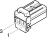

N16 Rear window wiper motor ( LEFT TAILGATE )
- Path
- Electrical equipment > Connectors > N Electric motors and actuators > N16 Rear window wiper motor > N16 Rear window wiper motor ( LEFT TAILGATE )
- Kind
- connector pinout (pin -> wire colour -> other end)
- Applies to
- engines: 1.6 TS , 1.8 TS, 2.0 JTS, 2.5 V6, 3.2 V6, 1.9 JTD 8v , 1.9 JTD 16v, 2.0 JTS, 2.4 JTD 10v, 2.4 JTD 20v; all production periods; only with equipment: Station Wagon
- Interactive page
- https://sloeber94.github.io/elrnDB-a156/en/#/3236989
Applies to: engines: 1.6 TS , 1.8 TS, 2.0 JTS, 2.5 V6, 3.2 V6, 1.9 JTD 8v , 1.9 JTD 16v, 2.0 JTS, 2.4 JTD 10v, 2.4 JTD 20v; all production periods; only with equipment: Station Wagon

Wiring | Colour |
|---|---|
BIANCO (white) |